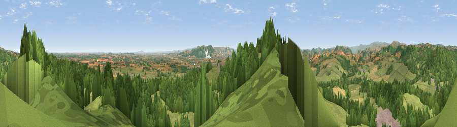

Viewpoint near Pant
#4800 in England · top 17% of its area beats it · near PantWhere it is
The exact computed spot (SJ 26575 22612). Click the marker for map links.
The view, rendered

A 360° render of this exact spot computed from the terrain model, tree cover and land cover — summer colours, afternoon light, calibrated against photographs of famous viewpoints. Real trees, hedges and buildings will differ in detail.
The panorama
Grey silhouette: terrain skyline in each direction (720 bearings, Earth curvature and refraction included). Dashed green: skyline with trees (+15 m) and buildings (+8 m) as obstacles. Blue strip: how far the ground is visible on each bearing.
Where the view opens
Wedge length = distance to the farthest visible ground on that bearing (vegetation-aware). Rings at 10, 25 and 50 km.
What fills the view
51% grassland · 41% woodland · 6% cropland · 2% built-up
Angular shares of the visible panorama (visual magnitude), not map area. Landscape diversity 0.42 (0–1 Shannon).
Key numbers
More beautiful places nearby
The staircase of upgrades: each row has a higher view potential than everything closer. Driving times are estimates from straight-line distance, calibrated against real road routing — check an actual route before setting out.
| Place | Direction | Drive | Score |
|---|---|---|---|
| Viewpoint near Pant | NNE · 0 km | ~1 min | 71.6 |
| Viewpoint near Nantmawr | NW · 3 km | ~8 min | 73.6 |
| Viewpoint near Nantmawr | NW · 5 km | ~11 min | 74.4 |
| Viewpoint near Trefonen | NNW · 5 km | ~12 min | 75.0 |
| Viewpoint near Melverley | SSE · 10 km | ~19 min | 78.2 |
| Viewpoint near Halfway House | SSE · 10 km | ~19 min | 83.3 |
| The Lawley | SE · 34 km | ~52 min | 85.8 |
| Viewpoint near Little Wenlock | ESE · 39 km | ~58 min | 86.6 |
52.79606, -3.09040 · source: screening · position refined by local search. Computed location — check access rights before visiting.